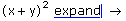

The Symbolic Toolbar |
As an alternative to typing keyboard combinations and keywords for symbolic operations, you can insert keywords using the Symbolic toolbar. To bring up the Symbolic toolbar, click the symbolic toolbar button on the Math toolbar or select Toolbars > Symbolic from the View menu.
To insert the symbolic equal sign or a keyword, click the corresponding button on the toolbar. For example, to evaluate 2x + 3x:
Press [Enter].
2x + 3x → 5 · x
As another example, to expand (x + y)3:

Press [Enter].
(x + y)3 expand → x3 + 3 · x2 · y + 3 · x · y2 + y3
| The Modifier Toolbar |
You can use the Modifier toolbar to insert modifiers after keywords. Click the "Modifiers" button on the Symbolic toolbar to bring up the Modifier toolbar.
To insert a modifier, first create a placeholder after the keyword you want to modify, and then, with the cursor in the placeholder, click a button on the Modifier toolbar.
| Tooltips |
To learn what a button does, move the mouse over the button until a tooltip shows the title and a description appears on the message line of the Status Bar.
Note that the tooltips are only documented for US keyboards. The Mathcad Keyboard Shortcuts page may show the shortcuts for your language keyboard.